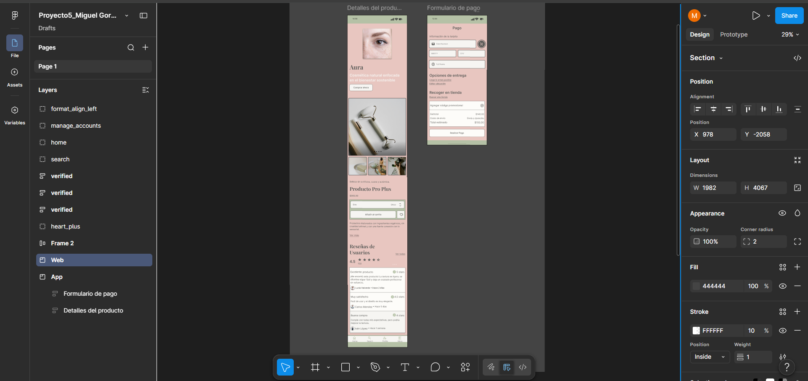
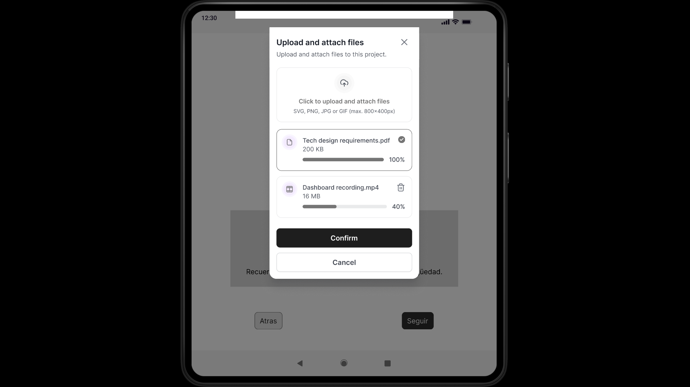

Designing clearer user flows
Turning early ideas into structured, testable interface flows.
A wireframing and prototyping case study focused on improving navigation clarity, reducing friction, and shaping a more intuitive user journey before moving into final UI design.

The interface needed a clearer path for users
The experience lacked a clear navigation structure, making it harder for users to understand where to start, what to do next, and how to complete key tasks efficiently.
Exploring layout and flow options before final UI
Low-fidelity wireframes helped test structure, hierarchy, and navigation logic before investing time in visual details.

From low fidelity structure to interactive prototype
- Mapped the main user flow and identified key decision points.
- Created low-fidelity wireframes to explore screen structure.
- Refined hierarchy and navigation patterns based on clarity.
- Built an interactive prototype to simulate the user journey.
Designing interactions before visual polish
Structure
Wireframes defined the main layout, content grouping, and user path before visual design.
Flow
Interaction paths helped clarify how users would move between screens and complete tasks.
Validation
The prototype made it possible to evaluate navigation clarity before final interface decisions.
A clearer foundation for interface design
The wireframes created a stronger foundation for the final interface by clarifying hierarchy, reducing unnecessary steps, and improving the overall task flow.

Reduce friction before visual design begins
- Clarify navigation before applying final UI styling.
- Use wireframes to test information hierarchy early.
- Prototype key user paths before committing to final screens.
- Use interaction logic to identify potential usability issues sooner.
Wireframes turned uncertainty into structure
The project helped transform an unclear navigation experience into a more structured flow, making it easier to understand user paths and move toward a more confident final interface.
Interested in clear, structured product experiences?
I’m open to UX/UI opportunities focused on user flows, prototyping, usability, and clear digital experiences.